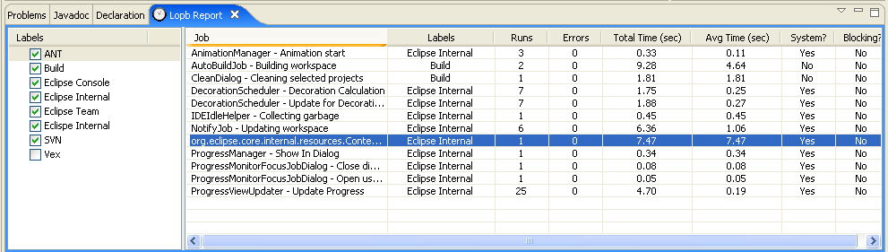
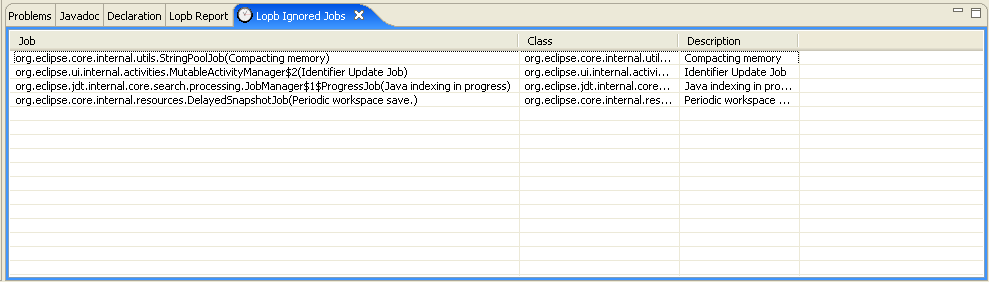
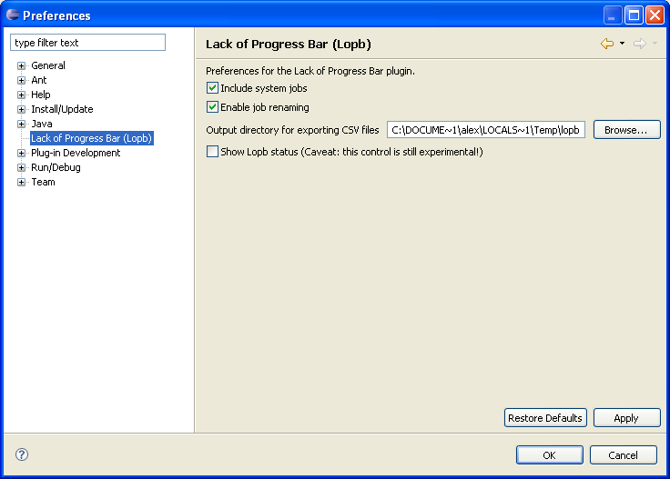
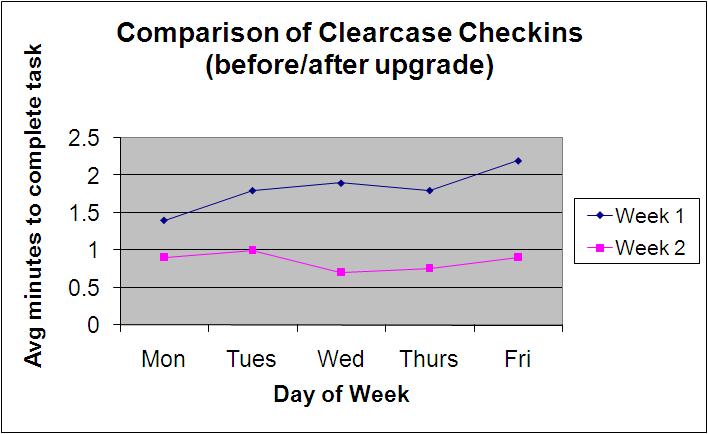

Version 0.4.2
Copyright © 2009 Alex De Marco, Aaron Silinskas, Abhishek Nath
Permission is granted to copy, distribute and/or modify this document under the terms of the Eclipse Public License, Version 1.0.
Table of Contents
Lack of Progress Bar (Lopb) is a performance benchmarking tool for your software development environment. Lopb can be used to monitor and optimize the performance of tools and infrastructure that developers access through their Eclipse-based IDE.
To install Lopb in your Eclipse environment, see Installation. To read about how Lopb works, see the section on Concepts. For a description of Lopb Features, see the Lopb Features section. For examples of the types of reports that can be produced with the data provided by Lopb, see the Reporting Cookbook section. Finally, for answers to frequently asked questions, please refer to the FAQ.
If you have any questions about Lopb or are interested in contributing to the project, please send us an email at support@lopb.org.
The following paragraphs explain some of the Eclipse functionality that Lopb relies on to gather benchmarking information.
Since Eclipse version 3.0, plug-in developers are strongly encouraged to implement long-running activities as an Eclipse background Jobs [1] . For example, checking a file out of a source code repository, building from an ant script, and publishing an app to an application server should be implemented as Eclipse background Jobs by plug-in developers.
Jobs get scheduled to run by the JobManager. The JobManager provides a callback mechanism so that classes implementing IJobChangeListener will be notified when jobs are scheduled, when they complete, or otherwise change execution status. The events are instances of IJobChangeEvent.
By using this mechanism, Lopb listens for all job change events and when they occur, it records the job identifier, a timestamp, and other job data which is later used to compute various performance metrics. The overhead introduced by Lopb is negligible.
When IJobChangeEvents are received by Lopb, a JobId is computed from the Job's class and name. We have noticed that plug-in developers often provide a short description of the job's behavior instead of a name, and this is supported by Lopb. We assume that the class and name pair forms a unique identifier for a job, and in practice so far, this assumption has held true. Every time a job runs, Lopb keeps track of start and end time along with JobId. When a job ends, Lopb determines average execution time for all runs of the given JobId, in addition to some other metrics. This data is presented in the Lopb Report View.
Jobs can run concurrently, and may indeed contend for shared resources (e.g. workspace files). In order to guard against resource corruption or deadlock, scheduling rules are used. At this time, Lopb is not concerned with concurrency or scheduling rules since only individual job runs are monitored, and not dependencies between jobs or the locks or files that they contend for. This may change in the future in order to produce aggregate or "roll-up" metrics, see Lopb Status indicator (experimental).
In order to install Lopb using the Eclipse update manager, follow the instructions here and enter http://lopb.org/update as the Eclipse update site URL.
The following few paragraphs describe the features provided by Lopb, including the two Eclipse views, and the Eclipse workbench window trim contribution (i.e. Lopb Status indicator).
The Lopb Report View is the main view provided by Lopb. In the right panel, it shows a table of Jobs that have run since the beginning of the development session, which is generally when Eclipse started. In the left panel, a set of enabled or disabled Labels is shown. When a given label is enabled (checked), the jobs associated with that label will appear in the table.

Table 4.1. Lopb Report View: Columns
| Column | Description |
|---|---|
| Job | Shows either the jobId (which is derived from the class and name of the Job instance) or the jobAlias if one exists. This cell is editable so that users may modify the displayed text used to identify the job (a.k.a. JobAlias). Also see "Enable job renaming" in the Lopb Preferences page. |
| Labels | A comma separated list of labels assigned to a Job. Similar to Gmail labels used for organizing emails into one or many labels or categories. |
| Runs | The number of times the job has run since the start of the session. |
| Errors | The number of times that the job has returned an error code when it completed. |
| Total time (sec) | The sum of all run times, where each run time is equal to the end time minus the start time (in seconds). |
| Average time (sec) | The total time divided by the number of runs (in seconds). |
| System? | Job property indicating whether the job was started by an internal Eclipse system routine, or not (i.e. user-initiated). |
| Blocking? | Job property indicating whether this job is blocking a higher priority non-system job from starting due to a conflicting scheduling rule. |
In the top right corner of the view, the user may click on a drop-down command menu. The available commands are described below.
Table 4.2. Lopb Report View: Commands
| Command | Description |
|---|---|
| Export to CSV | Export the data from the Lopb Report View table to a comma separated value (CSV) file. See the "Output directory for exporting CSV files" preference in the Lopb Preferences page. |
| Reset session | Reset the user's session by clearing all jobs from the Lopb Report View table and setting all timers to zero. |
By selecting a row and then right-clicking, the user will be able to ignore a job from futher processing. This means that Lopb will not collect data for any future runs of the Job.
Users may indicate that they want Lopb to ignore certain jobs (see Lopb Report View: Right-click Menu, command Ignore Job). The jobs that have been ignored are displayed in the Ignored Jobs View shown below.

Table 4.3. Lopb Ignored Jobs View: Columns
| Column | Description |
|---|---|
| Job | The JobId or JobAlias. Same as Lopb Report View, Job column, except the cell is not editable. |
| Class | The Job class. |
| Description | The name or description of the job. |
By selecting an ignored job (i.e. row) in the table and then right-clicking, the user may remove a job from the list of ignored jobs.
The Lopb Status Indicator is still an experimental feature. It shows an aggregate metric of how much of a developer's session is consumed by background jobs as a percentage. It is intended to be used as a benchmark indicator for system deltas, or rather to compare system performance before and after a change like a RAM upgrade or system reconfiguration.
The Lopb Status Indicator is eventually going to be the "lack of progress bar", so the more time developers wait for jobs to complete (by staring at a progress bar), the higher the "lack of progress" metric will rise, and vice versa.
This indicator is disabled by default, but it may be enabled by clicking the Lopb status checkbox on the Lopb Preference page.
The user may override certain default behavior for Lopb by changing settings in the Lopb Preferences page. To access the page, click Window > Preferences and then select Lack of Progress Bar (Lopb).

The preferences that can be modified are described below.
Table 4.4. Lopb Preferences
| Preference | Description |
|---|---|
| Include system jobs | When checked, system jobs will be monitored by Lopb; otherwise they will be ignored. |
| Enable job renaming | When checked, Job alias will be editable (first column) in the Lopb Report view. |
| Output directory for exporting CSV files | When exporting CSV files, this is the base directory for all output files. |
| Show Lopb status | When checked, the Lopb status indicator will be shown in the Eclipse workbench window trim. |
This section describes various reports that can be produced from the data collected by Lopb. At this time, Lopb does not have any built-in reporting functionality. The data is exported from Lopb as CSV files, and then processed using a spreadsheet tool like MS-Excel in order to produce these reports.
Let us assume that Lopb was used to collect data about how long it took to check-in files on average for a given developer over the course of a week. Then, after an upgrade to the source code repository server, data was collected again over the course of a second week. Finally, by plotting the average time it took to check in a file for each of the week, the following report is produced.
